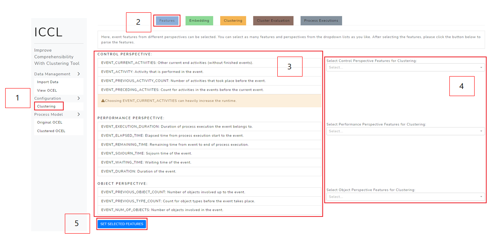
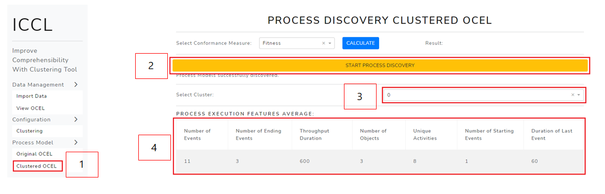
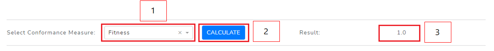

Welcome! This manual contains instructions how to use the ICCL tool. The aim of this project is to provide a process discovery tool that enhances the comprehensibility of discovered object-centric Petri nets by clustering. The prerequisites to apply this tool are knowledge in Process Mining, object-centric Process Mining and unsupervised learning techniques such as clustering. The main pipeline of the application works the following way:
The code comes with a Dockerfile to build and run the application inside a docker container. To build the container run
docker build -t docker-iccl .
After the container is built, the webapp can be run using
docker run -p 8050:8050 docker-iccl
Open http://127.0.0.1:8050/ to access the running webapp.
The application layout is structured the following way:
To import and select an OCEL, follow these steps:
If you have selected an OCEL with .csv format, the first rows of the .csv are displayed in table 6 and you have to fill out the form 2a:
After selecting a file, proceed as follows:
Optional:
After successfully uploading the OCEL, the first five rows are displayed in the table 6.
Note: only OCEL files with .csv, .jsonocel or .xmlocel extensions are supported.
To view the statistics and gain insight into your OCEL you can visit the 'View OCEL' page. The page can be accessed via the sidebar clicking on 'View OCEL' (1). Inside 2 you can see the summary statistics of your OCEL, providing information such as the object types 2.a or the activity count for each activity 2.b. The table 3 shows the entries of the OCEL, whereas the number of rows is limited to the first 1000 rows.
The configuration pipeline to cluster your process executions is as follows:
Optional:
The starting point of the pipeline is the feature selection. Each process execution is represented as a graph, and each node (=event) can carry different features.
We provide several possible features from different perspectives from which you can choose. Note that you don't have to choose any features at all and can choose as many features as you like.
However, you must click the SET SELECTED FEATURES button so that the chosen selection is parsed.

Conduct the feature selection:
The process execution graphs get enriched with features and are then embedded, so that a clustering algorithm can handle them. In the graph embedding tab, you can specify which kind of embedding technique you want to use. Please see Graph Embedding Methods for more information about the embedding algorithms.
To specify the graph embedding technique, follow those steps:
After the graph embedding is created, you can cluster the process executions. To do so, you have to specify a clustering technique. Furthermore, you can adjust the algorithm's parameters or use the automatic clustering mode. Please see Clustering Techniques for more information about the clustering algorithms.
Here's how you can execute the clustering:
After clicking the START CLUSTERING button, a progress bar is displayed, informing you about how far the process of clustering has progressed. If you want to cancel the process, click the CANCEL button 7.
After the clustering was successfully executed, the following shows up:
In the table 1, you can see the resulting clusters and the number of process executions that belong to the cluster ID. If you click the button 2, you get forwarded to the process discovery page.
If you want to cluster the process executions using K-Means or Hierarchical Clustering, you might not know which number of clusters is suitable. On the other hand, if you apply DBscan, where you don't have to specify the number of clusters, you must specify the epsilon parameter. To give you more insight into the effect of changing those parameters, you can try the cluster evaluation analysis that is included in ICCL. You can get more information about the scores that are used in Cluster Evaluation.
Note: before launching the cluster evaluation, you have to parse the features and graph embedding parameters.
Execute the cluster evaluation:
To get more information about the scores that are calculated, you can click on the arrows next to the name (6.) After the cluster evaluation was successfully executed, you can see different plots:
Look at the following plots by way of example:
The red dashed line indicates the best number of cluster, i.e. the number of clusters that eventuated in the optimal score.
The resulting plot for DBscan evaluation looks a bit different:
One of the key aspects in ICCL is the process execution. If you want to gain more insights into the process executions of your OCEL, you can do so on the Process Executions page.
Note: you can visualize the process executions and inspect its features at any point after uploading the OCEL.
To visualize the graph of one process execution and see its features, perform the following steps:
The results are the following:
At any point after uploading the OCEL, you can see the number of process executions in 7.
You can discover the Process Model for the original OCEL as well as for the sub-logs that are created by clustering the OCEL. Before discovering the latter Process Models, you have to go through the ICCL pipeline, so that clusters are already created. You can discover the comprehensive Process Model at any point after uploading the OCEL.
Conducting the process discovery:
After the process discovery is performed, the resulting model is displayed below. You can manipulate the view of the process model:

Conducting the process discovery:
You can manipulate the view of the process model:
To compare the process model with the OCEL, you can apply two conformance checking methods: fitness and precision. Before checking the conformance of the clustered Process Models, you have to go through the ICCL pipeline, so that clusters are already created. You can check the conformance of the comprehensive Process Model at any point after uploading the OCEL. 
After discovering a process model for the original OCEL or for the clustered sub-logs (and a cluster is selected), this segment shows up:
To save the displayed process model, follow these steps:
After clicking the button, the file will be downloaded in your browser. Additionally, the file is saved within the ICCL folder under assets/process_models/.
Here you can find a short description of the algorithms that are used in ICCL.
A process execution is a set of events of connected objects and resembles the case notion in traditional Process Mining. You can choose between two different types of extraction methods:
Connected Components: the technique uses the object graphs and extracts a process execution based on all transitively connected objects. This way, complex event logs might lead to large process executions.
Leading Object Type: after choosing one object type as the leading type, a process execution is constructed by looking at each object of the object type. Objects that are connected to the leading object are added to the process execution unless another object of that type has a lower distance. As a result, the process executions are more limited in size.
Auto Embed: uses Custom Feature Graph Embeddings but optimizes the number of dimensions automatically. The method tries to reduce the number of dimensions as far as possible but ensures that there are still enough dimensions to fully express the complexity of the feature graphs. This is done by comparing the normalized embedding loss (https://doi.org/10.1038/s41467-021-23795-5) for different numbers of dimensions. The fewer dimensions, the more efficient the clustering can be performed. The final choice of dimensions is displayed to the user. If no features were selected, graph2vec is automatically used, since our Custom Feature Graph Embedding method requires at least one feature.
Custom Feature Graph Embedding: especially designed for ICCL. The algorithm first creates a node embedding via FeatherNode which uses characteristic functions of node features with random walk weights to describe node neighborhoods. In the second step, the node embeddings are averaged over each dimension, resulting in a vectorized embedding of the graph. Focusses features, the structure of the process execution graphs is only implicitly considered. Check out the karateclub documentation for more information about the FeatherNode parameters that can be configured.
Note: The algorithm requires that at least one feature was selected.
Graph2Vec: first identifies subgraphs sourrounding each node in the feature graphs. By means of the Weisfeiler-Lehman’s algorithm, the subgraphs are considered as the vocabulary for a doc2vec SkipGram model. Since the graph’s structure is captured within the algorithm, feature graphs that are similar in structure will be close in the embedding space. Focusses the graph structure and additionally allows one feature per node. Check out the karateclub documentation for more information about the parameters that can be configured.
Feather-G: uses characteristic functions defined on graph vertices to describe the distribution of vertex attributes. Feather-G extracts node-level features that are pooled and then used to create a description of the feature graph. Focusses only the graph structure. Check out the karateclub documentation for more information about the parameters that can be configured.
ICCL makes use of the sklearn.cluster module to apply different clustering algorithms to the embedding. Please refer to the sklearn.cluster documentation to gather more information about the clustering parameters that can be configured in ICCL.
Auto Cluster: This techniques tries to find the best clustering technique automatically and optimizes their hyperparameters. Currently, we compare MeanShift, DBscan and KMeans with different parameter settings and our goal is to find a setting which maximizes the silhouette score. After the clustering has been performed, the final selected method as well as its parameters are displayed to the user.
K-Means: clusters data by trying to separate samples in k groups of equal variance. It aims to choose centroids that minimize the within-cluster sum-of-squares. The number of clusters (k) has to be specified beforehand.
Hierarchical Clustering: builds nested clusters by merging or splitting them successively. This hierarchy of clusters is represented as a tree, whereas the root is the unique cluster gathering all samples and the leaves are clusters containing only one sample. In ICCL, you have to specify the number of clusters beforehand.
Mean-Shift: aims to discover blobs in a smooth density of samples. It is a centroid based algorithm, which works by updating candidates for centroids to be the mean of the points within a given region.
Affinity-Propagation: Affinity-Propagation creates clusters by sending messages between pairs of samples until convergence. The algorithm finds members of the data points that are representatives of the clusters.
DBscan: Density-Based Spatial Clustering of Applications with Noise is a clustering approach that finds core samples of high density and expands clusters from them. The parameter epsilon is specifying the radius of a neighborhood with respect to some point, in which the number of neighboring points is counted.
Silhouette Score: quantifies the space between different clusters. For each number of clusters, a clustering algorithm is performed. Afterwards, it is measured how similar the observation are to the assigned cluster and how dissimilar they are to the observation of the nearest cluster. The measure has the range [-1,+1], whereas a score near +1 indicates that the clusters are well separated and negative scores indicate that the samples might be wrongly separated. Generally, the silhouette score is calculated for each datapoint and then averaged over the whole dataspace. You can find the calculation steps here: click
Davies-Bouldin Index: measure of the ratio between within-cluster distances, and between cluster distances. The score is bounded between [0, 1]. The lower the value, the tighter the clusters and the seperation between clusters. The steps of calculation can be found here: click
Fitness: measures to what extend the observed traces can be replayed by the model.
Precision: measures the extend of behaviour that is not captured in the event log, but allowed in the model.
The discovery of an object-centric Petri net works as follows: for each object type, a flattened event log is created and subsequently an accepting Petri net is discovered. For the discovery part, ICCL supports the Inductive Miner. In the second step, the Petri nets are merged into one Petri net. The object types are assigned to places and the variable arcs are identified.
Inductive Miner: the algorithm recursively performs the following steps